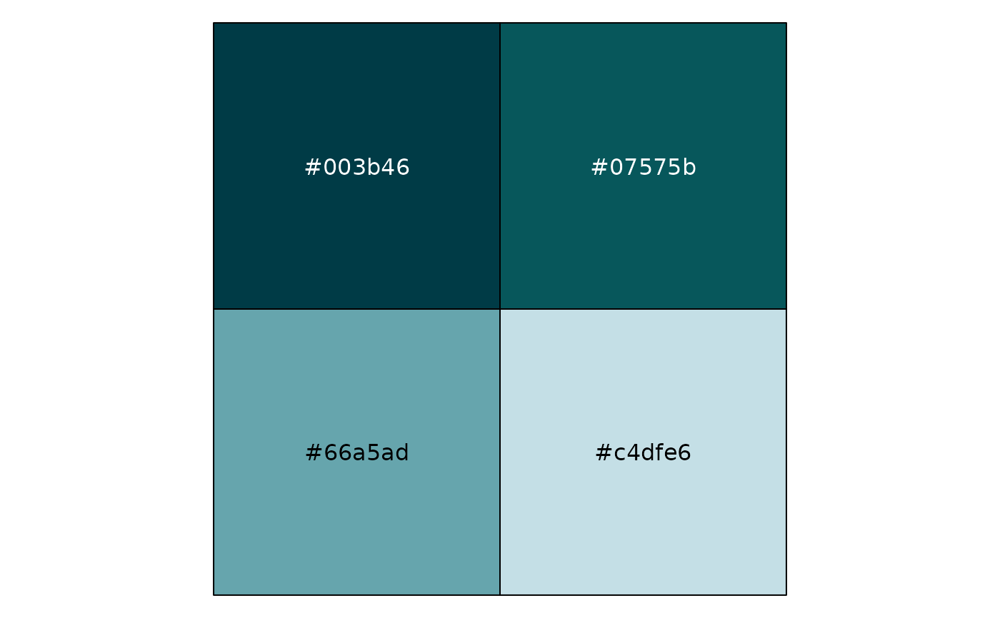

150 four-color palettes by the canva.com design school. These palettes were derived from photos and "impactful websites".
Format
A named list of character vector.
The names are the palette names. The values of the character vectors
are hex colors, e.g. "#f98866".
References
Janie Kliever, 100 Brilliant Color Combinations and How to Apply Them to Your Designs, Canva.com, June 20, 2015.
Mary Stribley, Website Color Schemes: The Palettes of 50 Visually Impactful Websites to Inspire You, Canva.com, January 26, 2016.
Schwabish, Jonathan. 150+ Color Palettes for Excel, PolicyViz, January 12, 2017.
Examples
require("ggplot2")
require("tibble")
if (require("purrr") && require("scales") && require("dplyr")) {
canva_df <- map2_df(
canva_palettes,
names(canva_palettes),
~ tibble(
colors = .x,
.id = seq_along(colors),
palette = .y
)
)
ggplot(canva_df, aes(
y = palette,
x = .id,
fill = colors
)) +
geom_raster() +
scale_fill_identity(guide = FALSE) +
theme_minimal() +
theme(
panel.grid = element_blank(),
axis.text.x = element_blank()
) +
labs(x = "", y = "")
show_col(canva_pal("Fresh and bright")(4))
show_col(canva_pal("Cool blues")(4))
show_col(canva_pal("Modern and crisp")(4))
}
